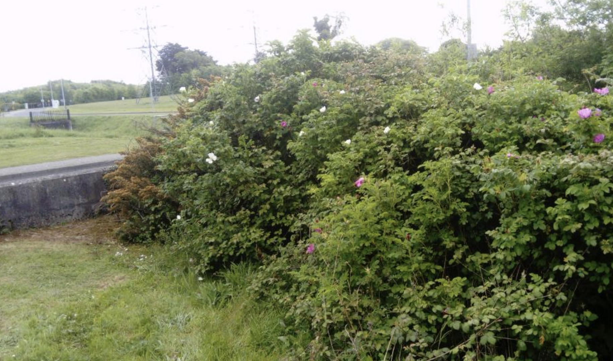
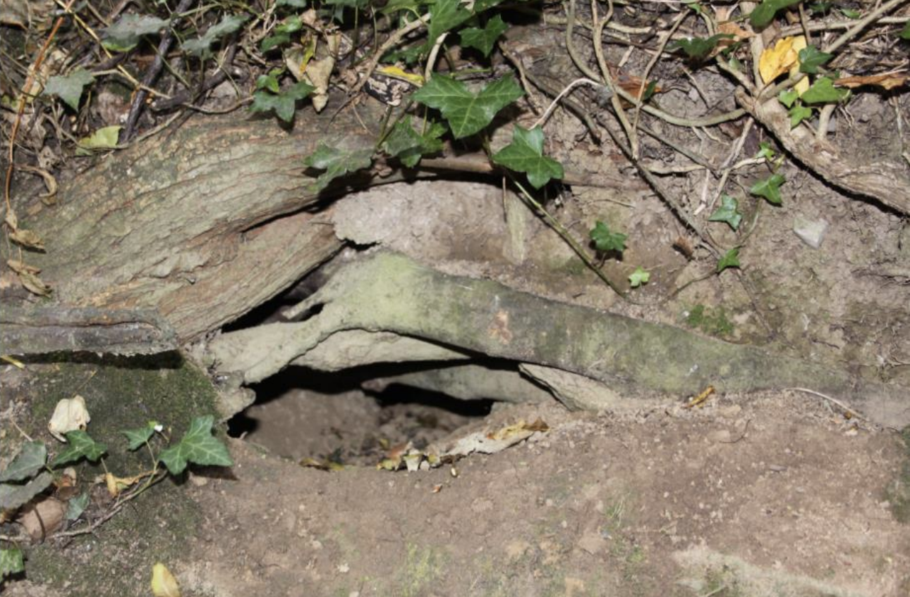

Greater knapweed (Centaurea scabiosa) support 16 varieties of butterflies, however wild grasses and herbage are required to support the caterpillar stage.
Rhinanthus minor germinates late February to early March, flowers in June, and sets seed in July. At the end of each growing season as the annual Rhinanthus minor die away they leave behind gaps into which new wild flowers can establish. As a result, wild flower seed sown into an existing sward will establish more readily in areas where yellow rattle already does well..
Benefits of grasslands:
Provides high quality, feed for wildlife.
Provides wildlife habitat.
Helps maintain soil fertility because it encourages higher levels of soil organic matter.
Sustains levels of soil organic matter.

Scrublands

Scrublands facts
Scrub is a natural part of other habitats, such as grassland and woodland, and an important component of the landscape.
Well-managed scrub and its margins support a range of wildlife. Scrub provides nectar, seeds, fruits, shelter and nest sites for invertebrates, birds and mammals. It also offers suitable habitat for many flowering plants.
The bramble scrub edge is often rich in flowering plants. These provide nectar for insects and seeds for birds and mammals. Tall herbs and grasses growing along the edge of scrub offer shelter for small mammals, nest sites for birds and hunting areas for foxes.